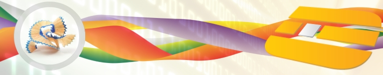

|  |  | Servizi | Consulenza
Digitalia Sistemi, grazie alle preziose esperienze maturate “in prima linea” dai suoi professionisti in ambito enterprise, è in grado di fornire servizi di consulenza tecnologica e di business in numerosi ambiti applicativi.
Le nostre esperienze principali spaziano in contesti di business quali il Customer Relationship Management (CRM), il Quality Control Management, il Document Management e l'e-Business.
In ambito tecnologico, forniamo supporto all'intero ciclo di sviluppo applicativo che si estende dalle fasi di raccolta dei requisiti utente e di definizione delle architetture, delle tecnologie e dei prodotti, fino a quelle realizzative di analisi, progettazione, sviluppo e testing, avvalendoci delle più avanzate metodologie (p.es.: PRINCE2), dei più diffusi linguaggi di modellazione (p.es.: UML e BPMN), e delle migliori tecnologie in ambito enterprise.
Sviluppo software
Ci proponiamo come ideatori e realizzatori di progetti “chiavi in mano”, offrendo in taluni casi supporto professionale a gruppi di lavoro coordinati direttamente dal Cliente.
Adottiamo le più efficaci metodologie di progettazione e sviluppo (es. ICONIX) e i più produttivi frameworks e strumenti di sviluppo, specialmente in ambito open source.
Formazione
La nostra azienda fornisce docenti qualificati per formazione specializzata nel settore dell'ICT, del web marketing e delle tecnologie multimediali.
Siamo in grado di redarre e proporre specifici progetti didattici su misura delle esigenze dei nostri Clienti e Partners.
Inoltre, siamo in grado di erogare attività di training on the job e mentoring, formando le risorse IT dei nostri Clienti, attraverso un'assistenza continua fornita direttamente su progetti "live".
|
|
|
 Area riservata
Area riservata

 Consulenza
Consulenza